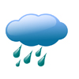
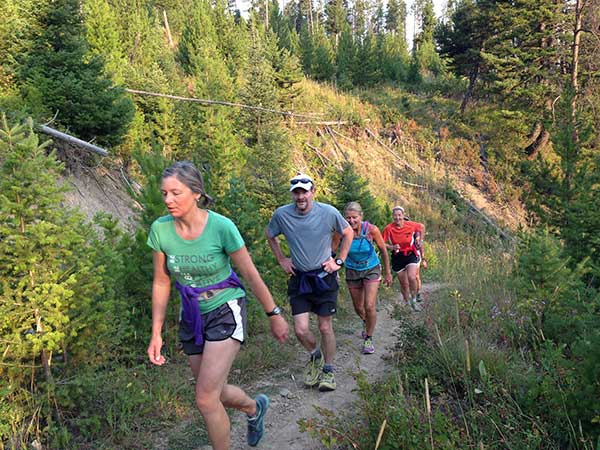

Fish Haven Idaho Weather
Weather Summary
Currently:
Temperature:
Wind Speed:
Wind Chill:
Humidity:
5 Day Forecast
Monday
75
Tuesday

72
Wednesday
 78
78
78
Thursday
75
75
Friday
 68
68
68

Soda Springs: The Outdoors at Your Frond Door
In Soda Springs, sports enthusiasts and athletes are spoiled for choice and all within 20 minutes of town. Recreation is virtually unlimited in this paradise. There's a 9-hole disc golf course at the town's West entrance and an 18 hole disc golf course on the East side. Camping opportunities abound on creeks, rivers, and reservoirs all within minutes of downtown. Paths for walking and running start within the city along with rural roads along the mountains, creeks, and reservoirs. There are hiking, boating, and fishing opportunities abound in the summer. If you would rather be in the water there are pools and hot springs for your enjoyment.
Come in the winter for beautiful trails for cross-country skiing within 5 minutes of town and downhill skiing within 45 minutes. Come and delight in the snowmobiling trails within 20 minutes of town. All are welcome from beginners to expereinced snowmobilers. The natural beauty of the area is unmatched summer or winter. Winter sports leagues are a big part of life here in Soda Springs.
If you're more comfortable as a spectator than as a participant, we have adult and child leagues including baseball, basketball, flag football, soccer, softball, t-ball, and volleyball. We offer camps for those interested and have special camps for the kiddies as well as 6th grade to adult 3 on 3 basketball tournaments on the 4th of July. There's more than enough to keep you busy as a participant or a spectator and our forecasts will keep you in the know about what the weather will be like for your activities.